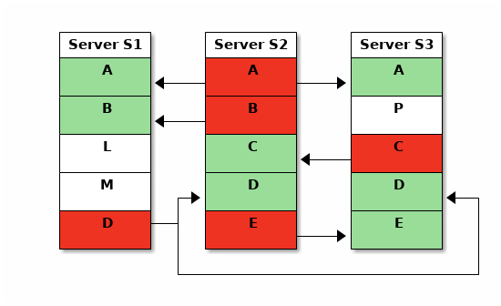

mirroring using gitolite
v2 mirroring users:
There are several important differences in mirroring; it's best to start from a clean slate on all copies, using this documentation.
If you're not willing to do that, you may be able to use the older, more detailed, documentation here to manage the migration. However, I cannot support that (mainly due to lack of time).
terminology change
NOTE This documentation is current with the just-released (as of 2pm UTC on 2020-08-04), v3.6.12. For most people, until you upgrade, this documentation will have some terminology differences.
quick intro
Mirroring is simple: you have one "master" server and one or more "copy" servers. The copies get updates only from the master; to the rest of the world they are at best read-only.
In the following picture, each box (A, B, C, ...) is a repo. The master
server for a repo is colored red, copies are green. Users only push to a
master server (red), and the master server then does a git push --mirror to
the copies. The arrows show this mirror push.

Here's a more complete description of what gitolite can do:
-
Different masters and sets of copies for different repos.
This lets you do things like:
- Use the server closest to most of its developers as the master for that repo.
- Mirror a repo to only some of the servers.
- Have repos that are purely local to a server (not mirrored at all).
- Push to a copy on demand or via cron (helps deal with bandwidth or connectivity constraints).
All this is possible whether or not the gitolite-admin repo is mirrored -- that is, all servers have the exact same gitolite-admin repo or not.
-
Pushes to a copy can be transparently forwarded to the real master.
Your developers need not worry about where a repo's master is -- they just write to their local mirror for all repos, even if their local mirror is only a copy for some.
caveats
-
Mirroring by itself will never create a repo on a copy; it has to exist and be prepared to receive updates from the master.
The simplest way to ensure your repos exist on the copies also is to mirror the special gitolite-admin repo as well, and this is what most sites do.
-
There is limited support for auto-creating wild card repos and sending 'perms' info across, with the following caveats at present. (Some of this text won't make sense unless you know what those features are).
-
WARNING: it does NOT make sense to mirror wild repos in setups where the authentication data is not the same (i.e., where "alice" on the master and "alice" on a copy maybe totally different people).
-
This has only been minimally tested. For example, complex setups or asymmetric configs on master and copy, etc. have NOT been tested.
-
Permission changes will only propagate on the next 'git push'. Of course, if you know the name of the copy server, you can run
ssh git@host mirror push copy-server-name repo-name -
Using 'perms' on a copy is allowed but will neither propagate nor persist. They will be overwritten by whatever perms the master has (even if it is an empty set) on the next 'git push'.
-
As with lots of extra features in gitolite, smart http support is not on my radar. Don't ask.
Please test it out and let me know if something surprising happens. Be aware that I have been known to claim bugs are features if I don't have time to fix them immediately :-)
-
-
Mirroring is only for git repos. Ancillary files like gl-creator and gl-perms in the repo directory are not mirrored; you must do that separately. Files in the admin directory (like log files) are also not mirrored.
-
If you ever do a bypass push, mirroring will not work. Mirroring checks also will not work -- for example, you can push to a copy, which is not usually a good idea. So don't bypass gitolite if the repo is mirrored!
-
From v3.5.3 on, gitolite uses an asynchronous push to the copies, so that the main push returns immediately, without waiting for the copy pushes to complete. Keep this in mind if you're writing scripts that do a push, and then read one of the copies immediately -- you will need to add a few seconds of sleep in your script.
setting up mirroring
This is in two parts: the initial setup and the rc file, followed by the conf file settings and syntax.
the initial setup and the rc file
For each server:
-
Install gitolite normally. Make clones of the server's 'gitolite-admin' repo on your workstation so you can admin them all from one place.
-
Give the server a short, simple, "hostname" and set the HOSTNAME in the rc file (i.e.,
~/.gitolite.rcon the server) to this name, for example 'mars'. Note: this has nothing to do with the hostname of the server in networking or DNS terms, or in OS terms. This is internal to gitolite. -
Run ssh-keygen if needed and get an ssh key pair for the server. Copy the public key to a common area (accessible to your workstation for copying) and name it after the host, but with 'server-' prefixed. For example, the pubkey for server 'mars' must be stored as 'server-mars.pub'.
-
Copy all these pubkeys (i.e., one from each server) to all the admin repo clones on your workstation and add them as usual. This is an
O(N^2)operation ;-)Don't forget to push the changes!
You may have guessed that the prefix 'server-' is special, and distinguishes a human user from a mirroring peer.
-
Create "host" aliases to refer to all other machines. See here for what/how.
The host alias for a host (in all other machines'
~/.ssh/configfiles) MUST be the same as theHOSTNAMEin the referred host's~/.gitolite.rc. Gitolite mirroring requires this consistency in naming; things will NOT work otherwise.Normally you should be able to build one common file and append it to all the servers'
~/.ssh/configfiles. -
The following MUST work for each pair of servers that must talk to each other:
# on server mars ssh phobos info # the response MUST start with "hello, server-mars..."Note the exact syntax used; variations like "ssh git@phobos.example.com info" are NOT sufficient. That is why you need the ssh host aliases.
Check this command from everywhere to everywhere else, and make sure you get expected results. Do NOT proceed otherwise.
-
Setup the gitolite.conf file on all the servers. If the copies are to be exact copies of the master, you need to do the complete configuration only on the master; the copies can have just this because on the first push to the master it will update all the copies anyway:
repo gitolite-admin RW+ = some-local-admin # possibly other rules option mirror.master = mars option mirror.copies = phobos
-
When that is all done and tested, enable mirroring by going through the rc file and uncommenting all the lines mentioning
Mirroring. -
If you wish to allow your users to run the mirror command remotely (usually not required), you need to enable it just like any other command that is not enabled by default; see gitolite commands for how.
conf file settings and syntax
Mirroring is defined by the following options. You can have different settings for different repos, and of course some repos may not have any mirror options at all -- they are then purely local.
repo foo ...access rules... option mirror.master = mars option mirror.copies = phobos deimos option mirror.redirectOK = all
The first line is easy, since a repo can have only one master.
The second is a space separated list of hosts that are all copies. You can have several copy lists, as long as the config key starts with 'mirror.copies' and is unique. For example.
option mirror.copies-1 = phobos deimos
option mirror.copies-2 = io europa
option mirror.copies-3 = ganymede callisto
Do not repeat a key; then only the last line for that key will be effective.
(v3.6+) preventing automatic sync
Sometimes you don't want a repo to be mirrored automatically (as soon as someone pushes to the master) to all the copies. For whatever reasons, you have some copies for whom you would like to trigger the sync later (and you don't mind the fact that those copies are out of sync until then).
To make that happen, use option lines like this instead of those shown above:
option mirror.copies.nosync-1 = phobos deimos
Except for the addition of a .nosync just after copies, all the other
rules are the same as before.
(v3.6.1+) mirroring failures
Since mirror pushes happen asynchronously (i.e, the user who originally pushed does not have to wait for the mirrors to be synced), any mirror push failures are not immediately visible to a human being, although you will find them if you look in gitolite's log files.
Note: since only a successful push can clear the error status, it follows that if a mirror push failed due to an invalid hostname, that status file will need to be manually deleted from the server. Look in the bare repo directory on the server, for one or more files whose names start with 'gl-copy' and delete the appropriate one.
Therefore, when the output of the mirror push to some copy contains the word "fatal", gitolite saves the output. This saved output is printed to STDERR when any user attempts to clone/fetch/push the repo on the master server for that repo. The hope is that someone will alert an admin to look at the problem. This will continue to happen until the error condition is cleared (i.e., a successful mirror push happens to that specific copy).
If you don't want these unexpected reports confusing users (or programs!), simply create a new rc variable called HUSH_MIRROR_STATUS and set it to 1. (If you're not sure where in the rc file this should go, I suggest putting it right after the HOSTNAME variable).
You can see the mirror status of any repo using the 'mirror status' command; the command line help for the mirror command ('gitolite mirror -h' or 'ssh git@host mirror -h') has details.
manually synchronising a copy repo
You can use the gitolite mirror push command on a master to manually
synchronise any of its copies. Try it with -h to get usage info.
Tip: if you want to do this to all the copies, try this:
for s in `gitolite mirror list copies reponame`
do
gitolite mirror push $s reponame
done
This command can also be run remotely; run ssh git@host mirror -h for
details.
Note: if your version of the mirror command does not support 'list copies',
use gitolite git-config -r reponame mirror.copies | cut -f3 instead.
redirected pushes
Please read carefully; there are security implications if you enable this for mirrors NOT under your control.
Normally, a master, (and only a master), pushes to a copy, and the copies are "read-only" to the users. Gitolite allows a copy to receive pushes from a user and transparently redirect them to the master.
This simplifies things for users in complex setups, letting them use their local mirror for both fetch and push access to all repos.
Note:
Just to be clear, the actual push will still happen only on the master, which needs to be up (the redirection is at the ssh level). It's main use is in geographically distributed setups, where users are encouraged to use a nearer node as their "fetch" remote, but, without this feature, they'd have to use the actual master node as the "push" remote. This allows users to use the same (nearby) node as the "push" remote also.
It is also useful if the master dies, and the administrator redesignates some other node as the master. In that situation, only users who had the original master as a remote need to update their remote URLs.
The syntax for enabling this is one of these:
option mirror.redirectOK = all
option mirror.redirectOK = phobos deimos
The first syntax trusts all valid copies to redirect user pushes, while the second one trusts only some copies.
IMPORTANT NOTES
-
This only works for ssh-based setups; you cannot use this feature in http mode.
-
Authentication happens on the copy, but authorisation is on the master. The master is trusting the copy to authenticate the user correctly, even though the actual push is going to the master. This means that user alice on the copy must be guaranteed to be the same as user alice on the master.
-
The part of the authorisation that happens before passing control to git-receive-pack (see access rules) will happen on the copy as well.
-
You cannot redirect gitolite commands (like perms, etc).
appendix A: HOSTNAME substitution
Wherever gitolite sees the word %HOSTNAME, it will replace it with the
HOSTNAME supplied in the rc file, if one was supplied. This lets you maintain
configurations for all servers in one repo, yet have them act differently on
different servers, by saying something like:
include "%HOSTNAME/*.conf"
(See include for more on the 'include' command).
You can use it in other places also, for example:
RW+ VREF/NAME/subs/%HOSTNAME/ = @%HOSTNAME-admins
(you still have to define @mars-admins, @phobos-admins, etc., but the actual VREF is now one line instead of one for each server!)
appendix B: efficiency versus paranoia
If you're paranoid enough to use mirrors, you should be paranoid enough to set this on each server, despite the possible CPU overhead:
git config --global receive.fsckObjects true
appendix C: moving the admin repo to a different master
Moving only some repos (other than the gitolite-admin repo) to a different master is easy. Just make the change in the gitolite.conf file, add, commit, and push.
Even for the gitolite-admin repo, if the current master is ok, it's the same thing; just make the change and push to the current master. Subsequent pushes will go to the new master, of course.
But if the current master is already dead, there's a bit of a catch-22. You can't push to the master because it is dead, and you can't push to any copy because they won't accept updates from anywhere but the server they think is the master.
Here's how to resolve this:
-
On each copy:
-
Edit
~/.gitolite/conf/gitolite.confto change the master and copy options for the gitolite-admin repo. -
Run
gitolite setup.
-
-
Now clone the admin repo from the new master to your workstation, change the options for the rest of the repos (if needed), then add/commit/push.
And that should be all you need to do.
appendix D: fixing a broken copy
Let's say you had
option mirror.master = mars
option mirror.copies = phobos deimos
and you then accidentally removed phobos and pushed.
You quickly realise your error and put the line back, then push again, only to realise that phobos is now unreachable. It took the previous push to heart and updated its internal state accordingly, and any subsequent attempts to touch the gitolite-admin repo on phobos results in the message:
FATAL: phobos: 'gitolite-admin' is mirrored but not here
This is basically saying, "yes I see that repo in the config, but I (phobos) am neither the master nor one of the copies for it, so please don't ask me about it!". You're basically locked out of phobos now.
The solution is this:
-
log on to phobos' gitolite shell account
-
edit
~/.gitolite/conf/gitolite.confto fix the mirroring options for the gitolite-admin repo. -
run
gitolite setup.
That should do it.